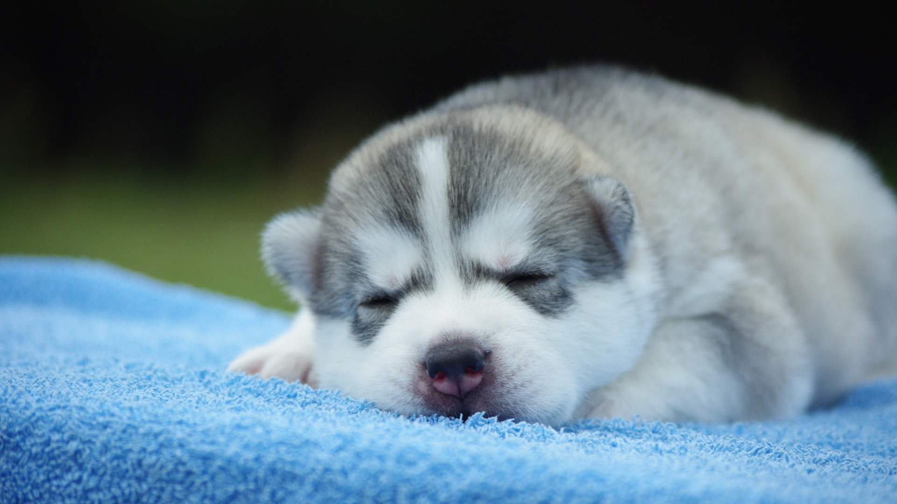
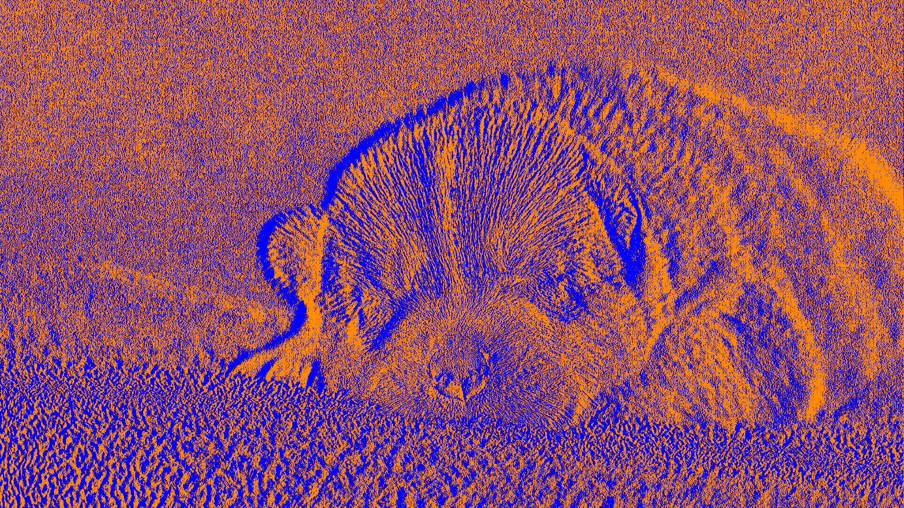

Image Artist
For the Image Artist project, we looked up filter ideas and found the emboss and deboss filters so we tried to make them. It required edge detection which was programmed in and changed the colors.
 
import PIL
import os.path
import numpy as np
import math
def deboss(original_image):
""" Insert comment regarding what this does here
original_image must be a PIL.Image
"""
#converts the image to a numpy ndarray
original_image = original_image.convert("RGB")
src = np.array(original_image)
img = np.array(original_image)
#gets the width and height of the original image
height = len(img)
width = len(img[0])
#fig, ax = plt.subplots(1, 3)
#show the first step by uncommenting the code below
#ax[0].imshow(img)
#sample loop to check if a color is strongly represented
for row in range(0, height):
for column in range(0, width-1):
r,g,b = src[row][column] #gets r g b values form the pixel
r2,g2,b2 = src[row][column+1]
#calculate the distance between color 1 and color 2
# if big set black
#if small set white
if math.sqrt((src[row][column][0]-src[row][column+1][0])**2+(src[row][column][1]-src[row][column+1][1])**2+(src[row][column][2]-src[row][column+1][2])**2) > 25:
img[row][column] = [0, 0, 255] # blue
elif math.sqrt((src[row][column][0]-src[row][column+1][0])**2+(src[row][column][1]-src[row][column+1][1])**2+(src[row][column][2]-src[row][column+1][2])**2) < 25:
img[row][column] = [255, 140, 0] # orange
#show the second step by uncommenting the code below
#ax[1].imshow(img)
#convert it back to an image from an array
result = PIL.Image.fromarray(np.uint8(img))
return result
def get_images(directory=None):
""" Returns PIL.Image objects for all the images in directory.
If directory is not specified, uses current directory.
Returns a 2-tuple containing
a list with a PIL.Image object for each image file in root_directory, and
a list with a string filename for each image file in root_directory
"""
if directory == None:
directory = os.getcwd() # Use working directory if unspecified
image_list = [] # Initialize aggregaotrs
file_list = []
directory_list = os.listdir(directory) # Get list of files
for entry in directory_list:
absolute_filename = os.path.join(directory, entry)
try:
image = PIL.Image.open(absolute_filename)
file_list += [entry]
image_list += [image]
except IOError:
pass # do nothing with errors tying to open non-images
return image_list, file_list
def deboss_all_img(directory=None):
""" Saves a modfied version of each image in directory.
Uses current directory if no directory is specified.
Places images in subdirectory 'modified', creating it if it does not exist.
New image files are of type PNG and have transparent rounded corners.
"""
if directory == None:
directory = os.getcwd() # Use working directory if unspecified
# Create a new directory 'altered'
new_directory = os.path.join(directory, 'debossed')
try:
os.mkdir(new_directory)
except OSError:
pass # if the directory already exists, proceed
#load all the images
image_list, file_list = get_images(directory)
#go through the images and save modified versions
for n in range(len(image_list)):
# Parse the filename
filename, filetype = file_list[n].split('.')
# calls your modified method, passing the color parameter
new_image = deboss(image_list[n])
#save the altered image, suing PNG to retain transparency
new_image_filename = os.path.join(new_directory, filename + '.png')
new_image.save(new_image_filename)